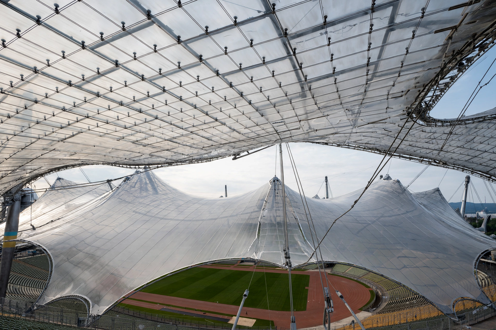

Tensile structure
A tensile structure is a construction in which loads are carried by elements held in tension rather than compression or bending. The members carry only tensile forces, which is achieved by pre-stressing the structure — typically a combination of cables, masts and a membrane surface.

Types
- Membrane structures — fabric (often PTFE-coated glass fibre or PVC polyester) held under tension by cables and masts
- Cable-net structures — grids of cables carrying lightweight cladding panels
- Pneumatic structures — membranes stabilised by internal air pressure
Design principles
Because membranes have negligible bending stiffness, their shape is determined by the equilibrium of tensile forces — design historically used physical models (soap films, hanging chains) and now form-finding software. The German architect-engineer Frei Otto pioneered modern tensile architecture, notably the roofs of the 1972 Munich Olympic Park.